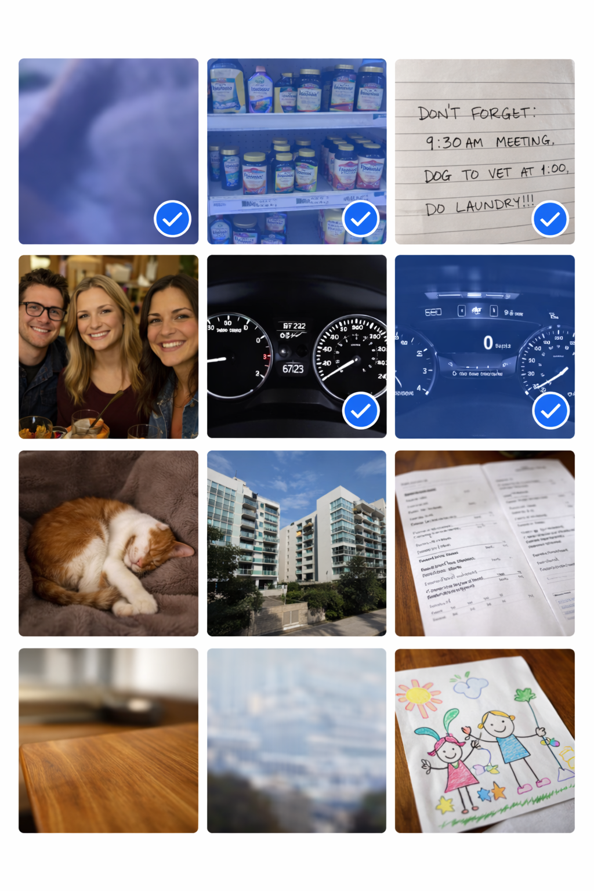

Your Camera Roll is full of task photos mixed with memories. Clean Up helps you sort through them — move task photos into Unmuck, organize into albums, or delete the clutter.
Album Filters
Start by choosing what to look at. Filter your Camera Roll by album.

Example photos are AI-generated
Three filter modes
- All Photos — Everything in your Camera Roll
- Not in Album — Photos not yet organized into any album
- [Album Name] — View photos from a specific album
When viewing an album, you get extra actions: Move photos out of the album, or Copy photos from the album into Unmuck.
Multi-Select Actions
Select multiple photos, then act on them all at once.

Example photos are AI-generated
Delete
Remove selected photos from your Camera Roll. Uses a single iOS permission prompt — no matter how many you selected.
Album
Add selected photos to an existing album or create a new one. When viewing an album, an additional "Move" option moves photos between albums.
Best
Select 2-6 similar photos. AI compares them and picks the sharpest shot. The best photo is deselected — rejects stay selected for easy deletion.
Move
Import selected photos into a Unmuck folder and delete originals from your Camera Roll.
Single Photo Actions
Tap any photo to open it, then choose an action.
Move
Choose a folder, import the photo, open Photo Details, then delete from Camera Roll.
Copy
Choose a folder, import the photo, open Photo Details, but keep the original in Camera Roll.
Delete
Remove from Camera Roll. Goes to iOS Recently Deleted for 30 days.
Album
Add to a Camera Roll album (existing or new). Photo stays in Camera Roll.
Share
Share the photo via the system share sheet to any app.
Keep
Mark as a memory. Photo stays in Camera Roll and is tracked so it can be hidden from future cleanups.
Best Photo AI
Stop keeping 5 versions of the same shot. Let AI pick the best one.
The "Best then Delete" Two-Tap Workflow
Select similar photos, tap Best, tap Delete. Two taps to go from duplicates to a single best shot.
The best photo is deselected (protected). Rejects stay selected. One tap on Delete clears them all. That's it.
What AI Compares
AI evaluates every photo in the set across multiple dimensions, then picks the one that wins overall:
- Sharpness — Is the subject in focus? Any motion blur?
- Composition — Framing, centering, balance
- Lighting — Exposure, shadows, blown highlights
- Facial expressions — Eyes open? Natural smiles? Nobody blinking?


Example photos are AI-generated
When to Use It
- Group selfies — Took 4 attempts to get everyone smiling? Best picks the one where nobody's blinking.
- Landscape duplicates — Snapped the same view 3 times hoping one would be sharper? Find out instantly.
- Pet and kid photos — Burst-fired 6 shots of something that won't sit still? AI finds the keeper.
- Document retakes — Tried a few angles on that whiteboard? Best picks the clearest, most readable one.
- Food photos — Took a few shots before the lighting was right? Keep the appetizing one.
Options Menu
Customize what you see in the Clean Up grid.
All toggles default to OFF so you see everything. Turn them on to focus your cleanup session.
Sort Options
Change how photos are ordered in the grid.
Grid and Map Views
Adjustable grid columns
Choose 1, 2, or 3 columns in the Options menu. Use 1 column for detail, 3 columns to scan fast. Your choice is remembered between sessions.
Map view
Tap the map icon in the toolbar to see your Camera Roll photos on a map. Photos with GPS data appear as pins — tap any pin to open the photo. Great for finding photos from a specific trip or location.
Range Selection
Long-press to select a range
Long-press any photo to enter selection mode. Then long-press another photo — all photos between the two are selected. Much faster than tapping each one individually.
Once in selection mode, you can also drag your finger across photos to select them continuously.
Ready to Clean Up?
Requires iOS 18.0 or later.

Photo intelligence. Always on. Always private. Always yours.